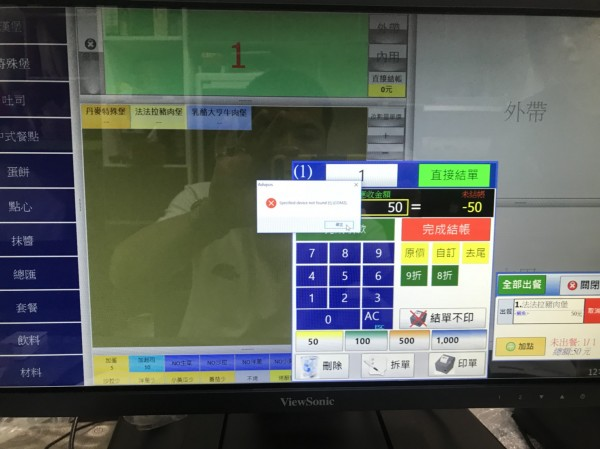
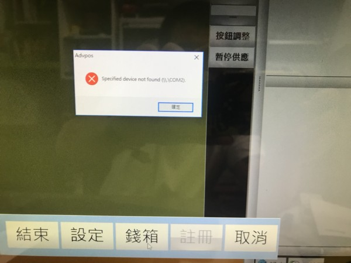

回問題列表 錢箱 印單機 先用軟體無法使用、但是電腦測試列印可以 請問怎麼設定 Q1497 未分類 anonymous Jul 23, 2018 錢箱 印單機 先用軟體無法使用、但是電腦測試列印可以 請問怎麼設定印單機再淘寶買的 對方用遠端幫我設定的 才是您也可以用遠端設定呢 再麻煩您回復教學 1 個回答 回答 #1498 advpos Jul 23, 2018 您好 如果電腦測試沒問題 先用就能印出 與開錢箱 1.您必須設定 1.錢箱與出單機連接 2.挑選正確出單機 請參考這篇 http://ico.tw/QA/index.php?qa=717 如果一直設定不成功 請附上設定畫面 進一步釐清問題
回答 #1498 advpos Jul 23, 2018 您好 如果電腦測試沒問題 先用就能印出 與開錢箱 1.您必須設定 1.錢箱與出單機連接 2.挑選正確出單機 請參考這篇 http://ico.tw/QA/index.php?qa=717 如果一直設定不成功 請附上設定畫面 進一步釐清問題